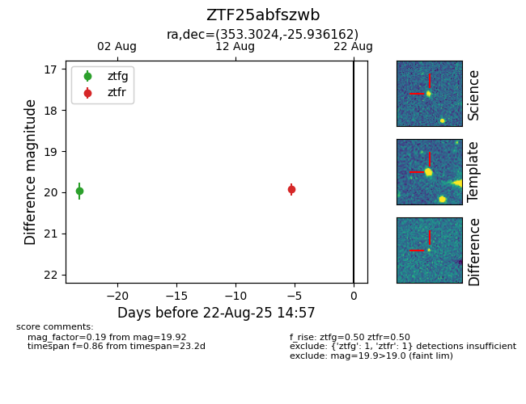

Target ZTF25abfszwb at 2025-08-22 15:07, see:
FINK: fink-portal.org/ZTF25abfszwb
Lasair: lasair-ztf.lsst.ac.uk/objects/ZTF25abfszwb
ALeRCE: alerce.online/object/ZTF25abfszwb
alt names
ZTF25abfszwb (ztf,alerce)
coordinates:
equatorial (ra, dec) = (353.3024,-25.93616)
galactic (l, b) = (32.3890,-72.47964)
photometry
last atlaso=19.69, ztfg=19.97, ztfr=19.92
1 atlaso, 1 ztfg, 1 ztfr detections
